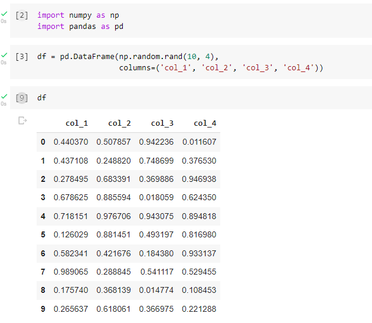

Creating a Data Frame
This is the DataFrame which we will use throughout all the visualizations. We are going to use the .plot() function of DataFrame and series to plot graphs. It has randomly generated values so each time we run this section it will generate a new DataFrame for the example data.
Plotting to a Line Graph
We can create a Line plot with the DataFrame.plot() function. This is a simple line graph but we can add more to it by specifying its features. We can plot graphs between two columns also


In this example, we have plotted a line graph between two columns only by providing the arguments for the x and y-axis. We can also generate subplots for individual columns. Let’s see an example:
Plotting Bar Graphs
Now, we will create bar plots for the same dataframe. Bar plots can be created with DataFrame.plot.bar() function. We can see that the bar plot is generated for all the columns. Let’s specify some features in the plot. We can stack the bars and set them horizontally as seen in these examples:


Plotting a Histogram
We will now generate a histogram for the DataFrame we can do this by using the DataFrame.plot.hist() function. We will also add some features and create a histogram for each individual column.


Area Plotting
Now, we will create a area plot. Area plot can be created with DataFrame.plot.area() function, this is the area plot for dataframe df. This plot is stacked automatically in Pandas. Now, we will create unstacked area plot.


Plotting a Pie Chart
A Pie plot can be created with DataFrame.plot.pie() function or Series.plot.pie(). We will be using our DataFrame but it must display all columns as seperate Pie Charts.

Reading/Writing to CSV File
We can create DataFrames using data from our CSV File, with this data we can again use it to create all the graphs shown above, this is how we use pandas to read from csv files.